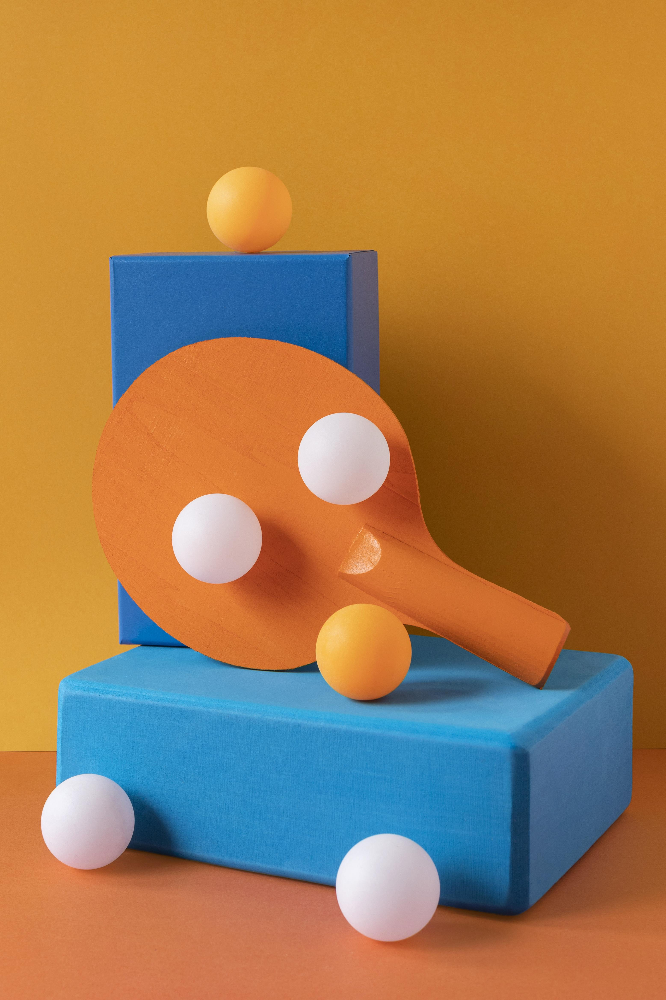

Настольный Теннис
Настольный теннис — олимпийский вид спорта, спортивная игра с мячом, в которой используют специальные ракетки и игровой стол, разграниченный сеткой пополам. Игра может проходить между двумя соперниками или двумя парами соперников. Задачей игроков является удерживать мяч в игре при помощи ракеток — каждый игрок после одного отскока мяча на своей половине стола должен отправить мяч на половину стола соперника. Очко начисляется игроку или паре игроков, когда соперник не может вернуть мяч в соответствии с правилами. Каждая партия продолжается до 11 очков (с перевесом не менее двух очков), матч состоит из нечётного количества партий и играется на большинство побед в партиях.
Главные международные турниры — Чемпионат мира и Олимпийские игры. 